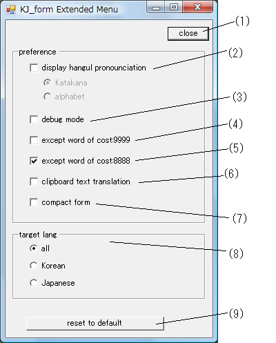

(1)close dialog
(2)display hangul pronounciation (Katakana)
(3)debug mode（display cost and src value)
(4)do not display words which cost is 9999
( FreeWnn Single Kanji table (Xsi/kWnn/kdic/single.u) )
(5)do not display words which cost is 8888
( auto generated words by program )
(6)auto clipborad copy
(7)use conpact form
(8)select target language for search
(9)reset to default